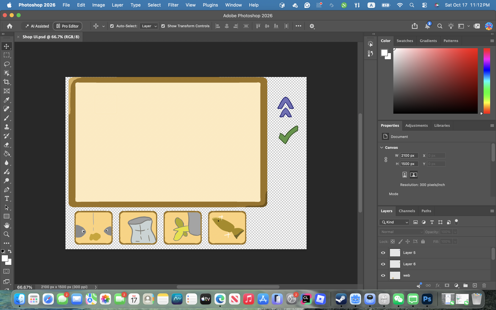

Independently designed and developed a complete Unity game within 12 hours, creating all gameplay code, visual assets, UI, and integration from scratch.

A simple and fun incremental game, developed and released
in 12 hours during the "Migrate"-themed Create-a-Thon
2026 Game Jam.
Winner of the "Best Interpretation of Theme" and
"Best User Experience" awards.
Independently designed and developed a complete Unity game within 12 hours, creating all gameplay code, visual assets, UI, and integration from scratch.


Prioritized and implemented core mechanics under a strict game-jam deadline, delivering and publishing a playable Windows build on itch.io.